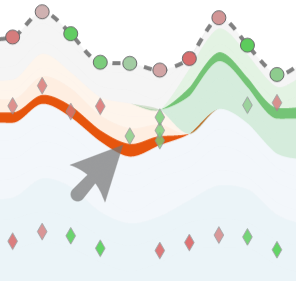
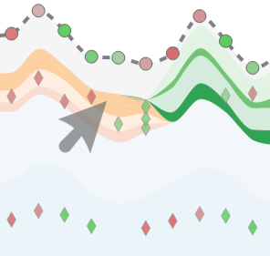
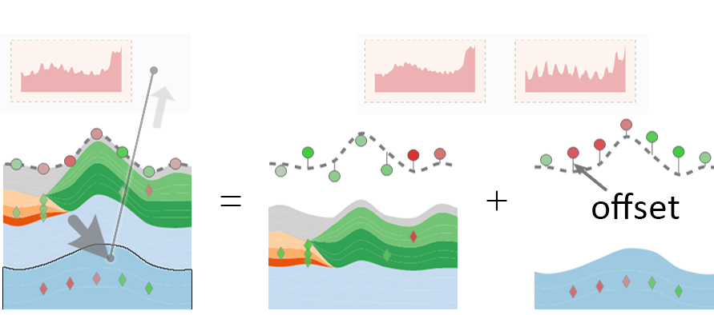

Overview
Stacked Graph Constructed with Clusters
The stacked graph is constructed by stacking "blocks" of clusters together, with each color encoding a cluster.
Dashed Line Encoding Aggregation
A dashed line represents the aggregation shape of all the sequences.
Glyphs Encoding Contributions
We use glyphs to express how sequences contribute to the aggregation.
Thumbnail View
Thumbnail of each stacked graph shows a preview of its position along all the stacked graphs and the aggregated shape.
Several interactions allowed.

Selecting
- Operation
Clickon a thumbnail - Highlight the thumbnail and the corresponding stacked graph.

Merging
- Operation
Draga thumbnail onto another one - Merge two thumbnails, and the corresponding stacked graphs, into one.

Re-ordering
- Operation
Draga thumbnail to an interspace - Move the thumbnail and the corresponding stacked graph to a certain position.
Interactions
Brushing
Brushing on a visual element provides users with basic information. Three levels of brushing available:

Layer Level
- Operation
Clickon a layer - Highlight all the segments that belong to the same layer over the entire period.
- Dismiss
Clickanywhere in the stacked graph

Cluster Level
- Operation
Shift + Clickon a cluster - Equivalent to brushing all layer segments included.
- Dismiss
Clickanywhere in the stacked graph

Aggregation Level
- Operation
Hovera time point - All the diamond glyphs along a time point are displayed at the corresponding point.
Selecting
Selecting helps to pinpoint aggregations at certain time points and compare their causes of construction.

- Correlation links
- Arc links between time points represent clustering results similarities, with green being highly different and red being highly similar.
- Operation
Clickon a circle - Show all the correlation links of a selected time point.
- Dismiss
Clickon the links
Decomposing
Drag individual layers, clusters, or intersection flows in Sankey diagrams back and forth, to construct multiple unique stacked graphs with any combination of interests. 
- Operation
Draga layer or
Shift + Draga cluster to the Thumbnail View:- to an interspace to construct a new stacked graph at a certain position,
- to a Thumbnail to transfer the layers to an existing graph.
- Construct multiple stacked graphs with independently drawn glyphs.
- Circles' offset distances encode the differences with the average contribution of all sequences.
Demonstrations
User Study
A comparative study with a benchmark system formed by a classical stacked graph.
Case Study